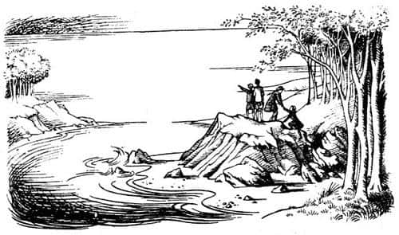
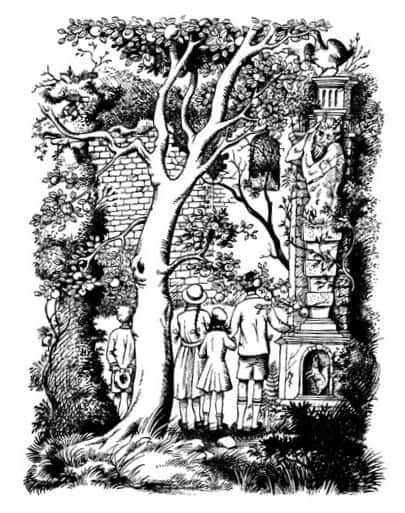

Ada
Bir zamanlar adları Peter, Susan, Edmund ve Lucy olan dört çocuk vardı. Aslan, Cadı ve Dolap adlı bir başka kitapta onların başından nasıl olağanüstü bir macera geçtiği anlatılıyordu. Büyülü bir dolabın kapısını açmışlar ve kendilerini, bizimkinden tamamen farklı bir dünyada bulmuşlardı. Bu farklı dünyada, Narnia denilen bir ülkenin kral ve kraliçeleri olmuşlardı. Sanki yıllarca hüküm sürmüşlerdi Narnia’da, oysa kapıdan geçerek yeniden İngiltere’ye döndüklerinde, aslında aradan hiç zaman geçmediğini fark etmişlerdi, sanki her şey göz açıp kapayıncaya kadar olup bitmişti. Her neyse, kimse onların ortadan kaybolduğunu fark etmemiş ve onlar da bilge bir yetişkin dışında kimseye bir şey anlatmamıştı.
Bütün bunlar bir yıl önce olmuştu. Şimdiyse hepsi bir tren istasyonunda, etrafını bavulların ve oyun kutularının sardığı bir bankta oturuyorlardı. Aslında, okullarına dönmekteydiler. Bir kavşakta bulunan bu istasyona kadar beraber seyahat etmişlerdi. Birkaç dakika sonra gelecek bir tren kızları, yaklaşık yarım saat sonra gelecek olanı da erkekleri okula götürecekti. Birlikte geçirdikleri yolculuklarının ilk bölümü tatillerinin devamı gibiydi, ancak şimdi, elveda deyip farklı yönlere dağılacakları şu anda, tatilin gerçekten bittiği ve okula başlayacakları duygusunun ağır bastığını hissediyorlardı. Canları fena halde sıkılıyor, kimsenin ağzını bıçak açmıyordu. Lucy ilk kez bir yatılı okula gidecekti.
Bomboş, sakin bir taşra istasyonuydu burası. Peronda kendileri dışında hemen hiç kimse yoktu. Lucy aniden, bir eşekarısı sokmuş gibi, kısa ve tiz bir çığlık attı.
“Ne oluyor, Lu?” dedi Edmund ve sonra irkilerek, “Of!” diye bağırdı o da.
Peter, “Ne oluyor Allahaş—” diye söze girdi ama o da anında söyleyeceğini unutup, “Susan, bırak! Ne yapıyorsun? Beni nereye sürüklüyorsun?” dedi.
“Sana dokunmuyorum bile” dedi Susan. “Biri beni çekiyor. Ah! Ah! Ah yapma!”
Herkes, bir diğerinin yüzünün kireç gibi bembeyaz kesildiğini fark etmişti.
“Aynı şeyi ben de hissettim” dedi Edmund, sesi soluğu kesilmiş bir halde. “Sanki sürükleniyormuşum gibi. Korkunç bir asılma, of! Yine başlıyor.”
“Ben de” dedi Lucy. “Ah, dayanamıyorum.”
“Dikkatli olun” diye bağırdı Edmund. “El ele tutuşalım ve bir arada kalalım. Büyü bu – hislerim böyle olduğunu söylüyor. Çabuk!”
“Evet” dedi Susan. “El ele tutuşalım. Tanrım keşke durdurabilsem, ah!”
O anda eşyalar, bank, peron ve istasyon tamamen kayboldu. Dört çocuk kendilerini, el ele tutuşmuş halde ve soluk soluğa, ağaçlık bir yerde buldular; ağaçlar öylesine sıktı ki, batan dallar arasında güçlükle hareket ediyorlardı. Gözlerini ovuşturup derin bir nefes aldılar.
“Ah, Peter!” diye şaşkınlıkla bağırdı Lucy. “Sakın Narnia’ya geri dönmüş olmayalım?”
“Başka bir yer de olabilir” dedi Peter. “Bu ağaçların arasından burnumun ucunu bile göremiyorum. Eğer varsa, açıklık bir yere çıkmayı deneyelim.”
Isırganların dalamasına, dikenlerin batmasına aldırmadan güçlükle ağaçlık alanın dışarı çıktıklarında, onları bir başka sürpriz bekliyordu. Şimdi her yer aydınlıktı. Birkaç adım sonra kendilerini ormanın kıyısında, kumsala bakarken buldular. Biraz ilerideki sakin denizin kumları okşayan dalgacıklarının çıkardığı ses, güçlükle işitiliyordu. Hiçbir kara parçası görünmüyordu. Gökyüzü bulutsuzdu. Güneş, sabah saat onda olması gerektiği yerdeydi. Göz kamaştırıcı mavilikteki denizin kokusunu içlerine çekerek öylece kalakaldılar.
“Vay be!” dedi Peter. “Bundan iyisi can sağlığı.”
Beş dakika sonra ayakkabılarını çıkarmış, serin ve berrak suda yürüyorlardı.
“Bu durum, havasız bir trenle Latince’ye, Fransızca’ya ve cebire geri dönmekten daha iyi!” dedi Edmund. Sonra uzunca bir süre hiç konuşmadan sağa sola su sıçratarak karides ve yengeç aradılar.
“Yine de” dedi Susan az sonra, “galiba bir plan yapmamız gerekiyor. Biraz sonra acıkacağız.”
“Annemizin yolculuk için hazırladığı sandviçler var” dedi Edmund. “En azından benimki hâlâ duruyor.”
“Benimki yok” dedi Lucy. “Küçük çantamdaydı.”
“Benimki de” dedi Susan.
“Benimki kumsalda, ceketimin cebinde” dedi Peter. “Bu, dört kişiye iki sandviç düşüyor demektir, ki bu durum hiç de iç açıcı değil.”
“Şu anda” dedi Lucy, “bir şey yemek yerine bir şey içmeyi yeğlerim.”
Şimdi hepsi, kumsalda güneşin alnında yürüyen herkes gibi, susadıklarını hissediyorlardı.
“Tıpkı bir gemi kazası gibi” dedi Edmund. “Kitaplarda hep adadaki temiz tatlı su kaynaklarını bulurlar. Keşfe çıksak iyi olur.”
“Bu, yeniden sık ağaçlığa döneceğimiz anlamına mı geliyor?” dedi Susan.
“Buna gerek yok” dedi Peter. “Eğer burada dere varsa, her derenin yaptığı gibi denize dökülüyordur; bir dereye rastlayabilmek için sahilde yürümemiz gerekiyor.”
Yürümeye başladılar. Önce düzgün, ıslak kumda, sonra da insanın parmaklarının arasına giren, ince, kolaylıkla dağılan kumda yürüdüler. Çoraplarını ve ayakkabılarını giymeleri gerektiğini düşündüler. Edmund ve Lucy ayakkabı ve çoraplarını orada bırakıp araştırmaya çıplak ayakla devam etmek istiyorlardı, ancak Susan delilik olduğunu söyleyerek bu fikre karşı çıktı: “Eşyalarımızı bir daha asla bulamayabiliriz” dedi, “karanlık çöküp hava soğuduğunda hâlâ burada olursak onlara ihtiyacımız olacak.”
Ayakkabılarını giydikten sonra denizi sol, ormanı sağ taraflarına alarak sahil boyunca yürümeye başladılar. Arada sırada duyulan martı çığlıkları dışında ıssız bir yerdi. Ağaçlar o kadar sık, her şey o kadar karmaşıktı ki, içini güçlükle görüyorlardı. Doğrusu hiçbir hareket yoktu; ne bir kuş ne de bir böcek.
Deniz kabukları, yosunlar, anemon çiçekleri ya da gölcüklerdeki küçük yengeçler hoş bir manzaranın dikkate değer güzellikleri olabilir, ancak bu manzara içinde susamış bir bedenle dolaşıyorsanız tüm bunlar önemini yitirir. Soğuk sudan çıkalı beri ayakları pişmeye başlayan çocuklar, şimdi ayaklarında demir külçeler taşıyormuş gibi hissediyorlardı kendilerini. Susan ve Lucy’nin yağmurlukları vardı. Edmund, büyü onları etkisi altına almadan az önce paltosunu istasyondaki bankın üzerinde bıraktığı için, Peter’in paltosunu dönüşümlü giyiyorlardı.
Az sonra sahil sağa doğru kıvrılmaya başladı. Yaklaşık on beş dakika sonra, denize uzanan kayalık bir burnu geçer geçmez, oldukça keskin bir kıvrımla karşılaştılar. Ormandan çıktıklarında gördükleri yer tam arkalarındaydı şimdi. İleri baktıklarında, suyun öte yanında, araştırma yaptıkları ormanlık alana benzeyen, sık ağaçlarla kaplı bir başka sahil görebiliyorlardı.
“Orası bir ada mı yoksa buraya bağlanan bir yer mi, merak ediyorum” dedi Lucy.
“Bilmiyorum” dedi Peter. Sessizce, ağır ağır yürüdüler.
Yürüdükleri sahil, karşı kıyıya giderek yaklaşıyor, her burnu aştıklarında iki kıyının birleştiği yeri bulmayı umut ediyorlardı. Ancak hayal kırıklığına uğradılar. Tırmanmak zorunda kaldıkları kayalık bir yere geldiler. Tepeden oldukça uzağı görebiliyorlardı. “Kahretsin!” dedi Edmund. “İşe yaramadı. Diğer ormana hiçbir zaman ulaşamayacağız. Burası bir ada!”
Bu doğruydu. Bulundukları yerle karşı kıyı arasındaki boğaz otuz, bilemedin kırk metreydi. Artık boğazın en dar yerindeydiler. Bulundukları sahil daha sonra yeniden sağa kıvrılıyordu; oradan açık denizi görebiliyorlardı. Şimdiden adanın yarıdan fazlasını dolaştıkları açıktı.
“Bakın!” dedi Lucy aniden. “Şu ne?” Kumsalda uzanan uzun, gümüş rengi, yılana benzer bir şeyi işaret ediyordu.
“Bir dere! Bir dere!” diye bağırdı diğerleri. Yorgun olmalarına karşın, hiç vakit kaybetmeden patırtıyla kayalıklardan aşağı inip tatlı suya koştular. Kumsaldan uzakta, derenin üst kısımlarından su içmenin daha iyi olacağını biliyorlardı. Aceleyle derenin ormandan çıktığı noktaya gittiler. Ağaçlar, ilk gördükleri yerdeki gibi sıktı, ancak dere kendine derin bir yatak açmıştı. Yatağın yüksek taraçaları yosunlarla kaplıydı ve eğilerek bir tür yaprak tünelinden dereyi izlemek mümkündü. Gördükleri ilk kahverengi, derince bir birikintide, dizleri üzerine çöküp kana kana su içtiler; kollarını dirseklerine kadar suya sokup yüzlerini suya daldırdılar.

“Evet, şimdi” dedi Edmund, “sandviçler ne âlemde?”
“Sonraya saklasak daha iyi değil mi?” dedi Susan. “Sonra çok daha fazla ihtiyacımız olabilir.”
“Keşke” dedi Lucy, “susuzluğumuzu giderdiğimiz gibi açlığımıza da bir çözüm bulabilsek. Artık susuzluk çekmediğimize göre—”
“Tamam, sandviçler ne âlemde?” diye yineledi Edmund. “Küfleninceye kadar saklamanın bir anlamı yok. Burasının İngiltere’den çok daha sıcak olduğunu hatırlatırım; onları saatlerdir cebimizde taşıyoruz.” Sandviçleri çıkarıp paylaştılar. Kimseyi memnun etmemişti, ama hiçbir şey yememekten iyiydi. Bir sonraki öğünde ne yiyecekleri üstüne konuştular. Lucy, denize gidip karides yakalamak istediğinden bahsediyordu; ta ki içlerinden biri ağ olmadığını söyleyene kadar. Edmund kayalıklardan martı yumurtaları toplayabilecekleri fikrini öne sürmüştü, ama ne var ki, şöyle bir düşününce, martı yumurtasına rastlamadıklarını hatırladılar; bulsalar bile pişirmeleri mümkün değildi. Peter, eğer talihleri yaver gitmezse, yumurtaları çiğ çiğ yemenin hiç yoktan iyi olacağını düşünmüş, ancak bunu yüksek sesle dile getirmekte yarar görmemişti. Susan, sandviçleri bu kadar erkenden yemekle hata ettiklerini söyledi. Bu tartışma sinirlerini bozdu. Sonunda Edmund, “Bana bakın” dedi, “tek şansımız var, o da ormanda keşfe çıkmak. Münzeviler, maceracı şövalyeler ve benzerleri, ormanda kaybolduklarında bir şekilde hayatta kalmayı becerebilmişlerdir. Kökler, yemişler ve buna benzer şeyler bulurlar.”
“Ne türden kökler?” diye sordu Susan.
“Ben hep ağaç kökleri olduğunu düşünmüşümdür” dedi Lucy.
“Haydi” dedi Peter, “Ed haklı. Bir şeyler yapmalıyız. Orman, gözlerimizi kamaştıran güneşin altında kumsalda pineklemekten daha iyidir.”
Böylece ayaklanıp dere boyunca yürümeye başladılar. Çok zor bir işti. Dalların altından eğilmek, çalıların üzerinden atlamak zorunda kalıyorlardı. Büyük kayaların arasından geçmişlerdi ve giysileri yırtılmış, ayakları ıslanmıştı. Derenin ve kendilerinin çıkardıkları seslerden başka çıt yoktu etrafta. Bu durum canlarını sıkmaya başlamıştı ki, derenin sağında, epeyce yukarılarda parlak renkli bir cismin ışıltısını fark edip, nefis bir koku duydular.
“Hey!” dedi Lucy hayretle. “Sanırım bu bir elma ağacı.”
Lucy haklıydı. Dik yamacı nefes nefese tırmandılar, dikenli çalılıkları yararak geçtiler ve kendilerini, görüp görebileceğiniz en sert ve sulu, iri, altın sarısı elmalarla yüklü, yaşlı bir ağacın etrafında ayakta dururken buldular.

“Buradaki tek elma ağacı bu değil” dedi Edmund ağzı elmayla dolu olarak. “Oraya bakın – bir de şuraya.”
“Vay be, düzinelerce elma ağacı var” dedi Susan, yediği ilk elmanın koçanını fırlatıp ikinci elmayı koparırken. “Yabanileşip ormana dönüşmeden önce, burası bir elma bahçesiydi herhalde.”
“Öyleyse, bu adada yaşayanlar vardı” dedi Peter.
“Şu ne acaba?” dedi Lucy ileriyi işaret ederek.
“Gerçek bir duvar” dedi Peter. “Eski, taş bir duvar.”
Elma dolu dalları aralayarak duvara ulaştılar. Yer yer yıkılmış eski duvarın üzeri şebboy ve yosunlarla kaplıydı. Bir-ikisi dışında çevredeki tüm ağaçlardan daha yüksek olan duvara iyice yaklaştıklarında, bir zamanlar kapı olduğu anlaşılan, ancak şimdi büyük bir elma ağacının neredeyse tamamen kapattığı kocaman bir kemer buldular. Kapıdan geçebilmek için dallardan bazılarını kırmak zorunda kaldılar. Girişi açtıklarında beliren günışığı hepsinin gözlerini kamaştırdı. Kendilerini avluya benzer geniş bir alanda buldular. Burada hiç ağaç yoktu. Etrafta bakımlı çimenler, sarmaşıklar ve gri duvarlar vardı. Aydınlık, gizemli, sakin bir yerdi; ancak insanı hüzünlendiriyordu. Dik yürüyebilmekten ve rahatça hareket edebilmekten memnun bir şekilde alanın ortasına yürüdüler.